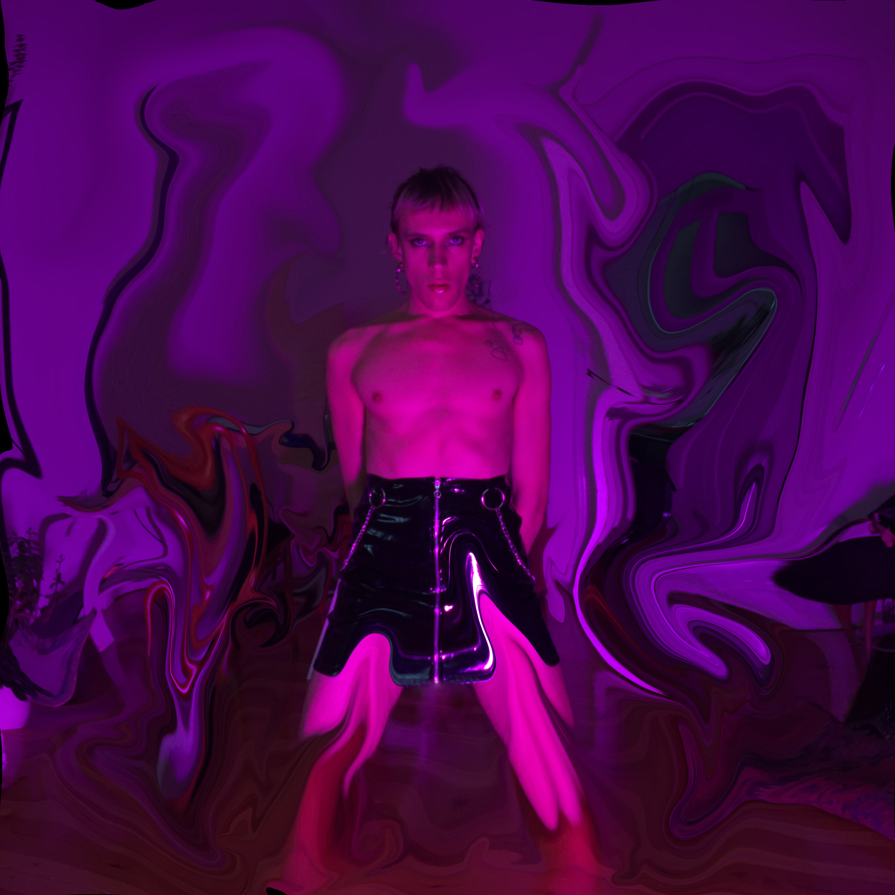

i love writing about myself in the 3rd person, so here we go:
philisha kay is a berlin-based curator, producer and experience designer, working on the intersections of identity, technologie and society.
following her aim to redesign the present by producing emamzipative narratives and envisioning inclusive futures,
she is part of the queer feminist art collective dgtl fmnsm and works as a freelancer at NEW NOW festival.
philisha has done several performances under her previous drag name “the lish”. she has signed with the model agency fifteen minutes
